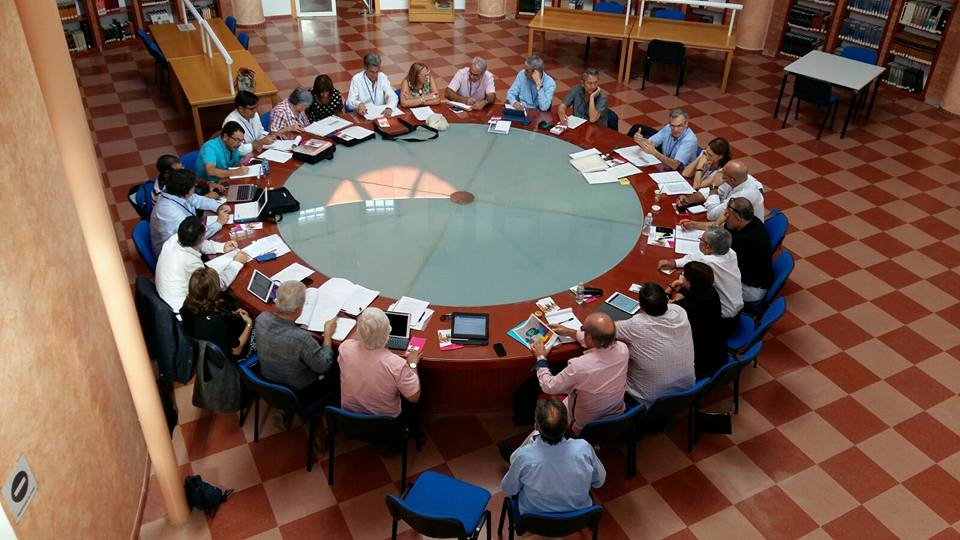

Comité
Científico

-
Mario Martín Brís. Universidad de Alcalá
de Henares.
-
José Moya Otero. Universidad de Las Palmas.
- Angeles Parrilla Latas. Universidad de Vigo.
-
Alejandro Rodríguez-Martín. Universidad
de Oviedo.
- Francisco Rodríguez Lestegas. Universidad de Santiago de Compostela.
-
Ángel San
Martín Alonso. Uiversidad de Valencia.
-
Cateri Soler García. Universidad de
Málaga.
- Joan Teixidó Saballs. Universidad de Girona.